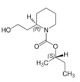
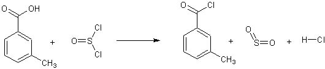
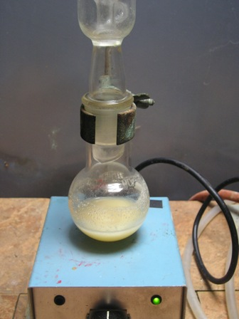
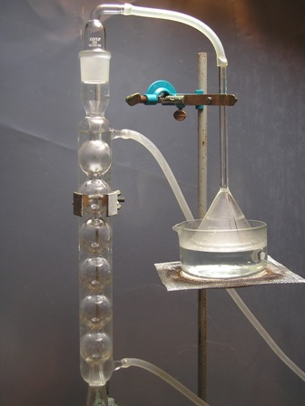
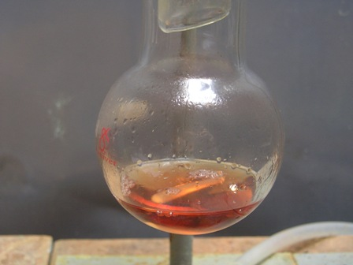

Tutti ci siamo spalmati sulla pelle almeno una volta, chi più chi meno, la dietiltoluamide dell'Autan, simbolo commerciale di un famoso repellente per insetti.
Ora questa sostanza è stata sostituita dalla icaridina ma la dietiltoluamide rimane in memoria come il repellente-tipo.


DEET Icaridina
Ho provato (ormai qualche anno fa, ma la pubblico adesso per i motivi che dirò) a farne la sintesi, con maggior interesse del solito perchè la stessa è tosta e quindi di particolare soddisfazione una volta arrivati alla fine.
Lo dico subito: la sintesi NON E' ADATTA in modo categorico ad uno sperimentatore alle prime armi e che non sia per sua natura "accorto e prudente".
Anche i reagenti non sono proprio quelli che si trovavano nel Piccolo chimico, nemmeno quello di quando eravamo bimbi e quel gioco era una cosa seria.
Detto questo come premessa doverosa, andiamo alla procedura.
La stessa si svolge in due fasi: nella prima avviene l'alogenazione (con tionilcloruro SOCl2) dell'acido m-toluico a cloruro di m-toluile il quale, nella seconda parte, viene fatto reagire con la dietilammina per dare l'ammide N,N-sostituita.
Materiale occorrente per la prima parte
- Acido m-toluico
- Cloruro di tionile
- vetreria opportuna
Ecco la reazione:

La procedura DEVE essere eseguita con tutti i sottintesi ai quali ho accennato prima, sotto cappa o in condizioni opportune.
Preparare un setup con pallone, condensatore allhin e trappola per HCl, come si vede in foto.
Il metodo dell'imbuto rovesciato su acqua funziona benissimo; se il setup è fatto bene NON si ha emanazione acida nell'ambiente e praticamente tutti i vapori fortemente acidi che si svolgono vengono assorbiti senza problemi.
Porre attenzione al livello dell'acqua, che deve essere di qualche mm appena sotto l'imbuto, senza toccarlo.
Tutta la vetreria deve essere perfettamente asciutta.

Mettere in un palloncino da 100 ml 10 g di acido m-toluico e aggiungere 10 ml di cloruro di tionile; chiudere immediatamente, mescolare e tenere a riflusso su bagno di sabbia per 15-20 minuti.Regolare la temperatura in modo che si abbia una leggera ebollizione ed un regolare svolgimento di HCl gassoso e anidride solforosa dalla sommità dell'allhin, che vengono assorbiti dalla "gas trap" in maniera praticamente totale.

Lasciar raffreddare e tenere il cloruro di m-toluile prodotto (ermeticamente chiuso con tappo smerigliato) per la successiva reazione con la dietilammina.
Si presenta come un liquido rossastro, fumante all'aria e aggressivo come tutti i cloruri acilici.

Ecco il cloruro di toluile! Conclusione la prossima volta.